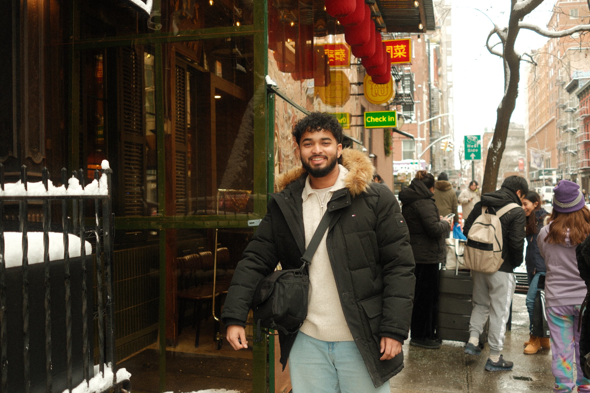

Jerin Kuruvilla was born in India and grew up surrounded by photography. His family was in the photography business their entire lives, and that world, the cameras, the light, the act of capturing a moment, was simply always there. That passion was passed down naturally, the way some things are.
When Jerin discovered film photography, something clicked. The slowness of it, the intentionality, the grain and softness that digital can't quite replicate. It felt right. There's a cost to each frame that changes how you see. You wait for the right light. You make a decision. You press the shutter.
His work today lives in that space: dreamy, editorial, deeply felt. Based in the Philadelphia area, he approaches every frame like a small piece of art. The work isn't about volume. It's about the image that earns its place.
The photographs here are love stories, portraits, quiet afternoons. Moments that mattered enough to document, rendered in the particular light of analog film.